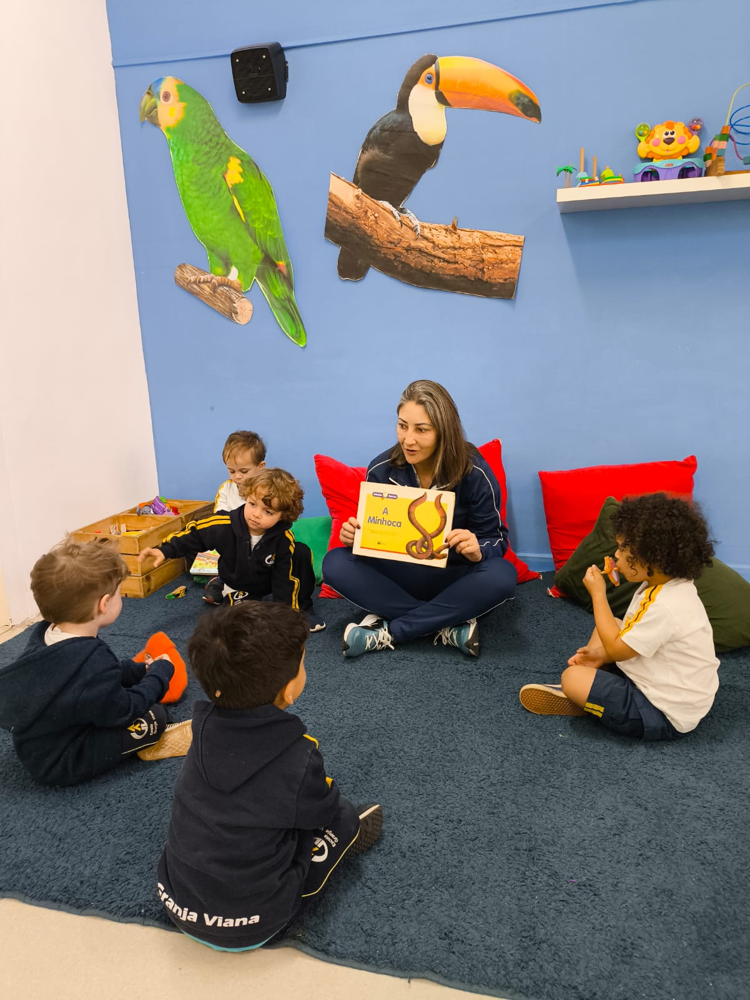

Na EGV, cada crianca e acolhida e tratada como individuo unico. Cercados de natureza, nossos pequenos aprendem com alegria desde os primeiros passos - em Cotia, Granja Viana.
Uma escola que cuida do desenvolvimento integral do seu filho com atencao, afeto e metodo pedagogico solido desde o inicio.
Arvores, passaros e animais silvestres fazem parte do dia a dia. As criancas desenvolvem desde cedo uma relacao especial com o meio ambiente.
Cada crianca e vista como unica. Os professores conhecem profundamente como cada pequeno aprende e adaptam as atividades ao seu ritmo.
Professores complementares de musica, movimento e educacao ambiental enriquecem a rotina e estimulam diferentes habilidades desde cedo.
A EGV e reconhecida pelo calor humano de toda a equipe. A adaptacao acontece com respeito ao ritmo de cada crianca, de forma tranquila.
Periodo regular das 13h30 as 17h45. Integral disponivel a partir das 7h, com opcao de 2 a 5 dias por semana flexivel para sua rotina.
Seu filho pode construir toda a trajetoria escolar na EGV, com a mesma cultura de valores e excelencia do inicio ao fim.
Pedagogia corporal que trabalha o autoconhecimento, a harmonia do tonus e o estado de presenca — aspectos fundamentais no desenvolvimento global e no processo de formalizacao da escrita.
Na EGV, o bilingue vai alem do ingles tradicional: conteudos curriculares sao ministrados em ingles por meio de projetos e vivencias — tornando o idioma parte natural do cotidiano escolar.
Veja como e o dia a dia das criancas na escola o espaco, as atividades e o cuidado de cada professor.
Aprender brincando, explorar a natureza, criar, se mover cada dia e uma nova descoberta na EGV.


Familias que confiam na EGV ha anos em suas proprias palavras.
A EGV ja faz parte das nossas vidas desde 2015. Adoramos o acolhimento dado as criancas. Nosso cacula adora as aulas de movimento, musica e educacao ambiental, adora explorar os espacos da escola. So temos a agradecer pela parceria EGV!
Esse e o primeiro ano de nossos filhos na EGV e estamos muito satisfeitos. A escola foi maravilhosa no processo de adaptacao fluiu de forma natural. Gratidao por encontrar uma escola que respeita as individualidades e une valores tao importantes a aprendizagem.
Na EGV, sinto que meus filhos nao sao apenas um numero. Eles sao conhecidos e cuidados por todos os colaboradores e professores. Isso sem falar na paixao que eles tem pela escola sentem falta das aulas ate nas ferias!
Tudo que os pais mais querem saber antes de visitar a escola.
As vagas da Educacao Infantil sao limitadas. Fale com a gente e encontre o melhor momento para visitar a escola.